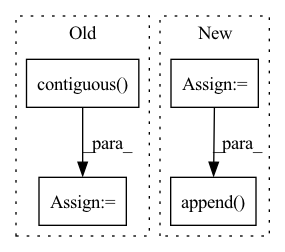

Pattern ID :2117
Before Change
// out = self.conv2(out, batch)
// out = self.conv3(out, batch) // n_points x length_features
// reshape back into batch
out = out.contiguous() .view(batch_size, n_vertices, -1)
// aggregate features from vertices
out = out.max(dim=-2, keepdim=False)[0]After Change
aggr_features.append(self.global_pool(out, batch, batch_size))
for conv_id in range(1, self.config["conv_depth"]):
out = self.conv_layers[conv_id](out, batch)
if self.config["skip_connections"]:
aggr_features.append( self.global_pool(out, batch, batch_size))
feature = torch.cat(aggr_features, -1) if self.config["skip_connections"] else self.global_pool(out, batch, batch_size)
// post-processingIn pattern: SUPERPATTERN
Frequency: 3
Non-data size: 4
Instances Fragment ID: 7571635
Project Name: maria-korosteleva/garment-pattern-estimation
Commit Name: fd8ff19db9d988e5ac9788f8b67560dab3cc7c33
Time: 2020-09-23
Author: mariako@kaist.ac.kr
File Name: nn/net_blocks.py
M Class Name: EdgeConvFeatures
N Class Name: EdgeConvFeatures
M Method Name: forward(2)
N Method Name: forward(2)
M Parent Class: nn.Module
N Parent Class: nn.Module
M File Name: nn/net_blocks.py
N File Name: nn/net_blocks.py
M Start Line: 106
M End Line: 125
N Start Line: 137
N End Line: 161
Before Change
// Back to batch first
attn_scores = torch.stack(attn_scores).transpose(0, 1)
mel_outputs = torch.stack(mel_outputs).transpose(0, 1).contiguous()
stop_tokens = torch.stack(stop_tokens).transpose(0, 1).squeeze(2)
// (B, T", mel_dim*r) -> (B, T, mel_dim)
mel_outputs = mel_outputs.reshape(B, -1, self.mel_dim)After Change
// Project to mel
// (B, mel_dim*r) -> (B, r, mel_dim)
output = self.mel_proj(proj_input)
output = output.view(B, -1, self.mel_dim)
// Stop token prediction
stop = self.stop_proj(proj_input)
stop = torch.sigmoid(stop)
// Store predictions
mel_outputs.append( output)
attn_scores.append(attention_score.unsqueeze(1))
stop_tokens.extend([stop] * self.r)
if greedy: Fragment ID: 7571634
Project Name: thuhcsi/tacotron
Commit Name: fea9ec535ec373aad564646f4f292fbee0217c29
Time: 2021-03-18
Author: johnson.tsing@gmail.com
File Name: model/tacotron2.py
M Class Name: Decoder
N Class Name: Decoder
M Method Name: forward(4)
N Method Name: forward(4)
M Parent Class: nn.Module
N Parent Class: nn.Module
M File Name: model/tacotron2.py
N File Name: model/tacotron2.py
M Start Line: 127
M End Line: 224
N Start Line: 127
N End Line: 216
Before Change
// Back to batch first
attn_scores = torch.stack(attn_scores).transpose(0, 1)
mel_outputs = torch.stack(mel_outputs).transpose(0, 1).contiguous()
stop_tokens = torch.stack(stop_tokens).transpose(0, 1).squeeze(2)
// (B, T", mel_dim*r) -> (B, T, mel_dim)
mel_outputs = mel_outputs.reshape(B, -1, self.mel_dim)
return mel_outputs, stop_tokens, attn_scores
After Change
// Project to mel
// (B, mel_dim*r) -> (B, r, mel_dim)
output = self.mel_proj(proj_input)
output = output.view(B, -1, self.mel_dim)
// Stop token prediction
stop = self.stop_proj(proj_input)
stop = torch.sigmoid(stop)
// Store predictions
mel_outputs.append( output)
attn_scores.append(attention_score.unsqueeze(1))
stop_tokens.extend([stop] * self.r)
if greedy: Fragment ID: 7571637
Project Name: thuhcsi/tacotron
Commit Name: fea9ec535ec373aad564646f4f292fbee0217c29
Time: 2021-03-18
Author: johnson.tsing@gmail.com
File Name: model/tacotron.py
M Class Name: Decoder
N Class Name: Decoder
M Method Name: forward(4)
N Method Name: forward(4)
M Parent Class: nn.Module
N Parent Class: nn.Module
M File Name: model/tacotron.py
N File Name: model/tacotron.py
M Start Line: 87
M End Line: 187
N Start Line: 88
N End Line: 180